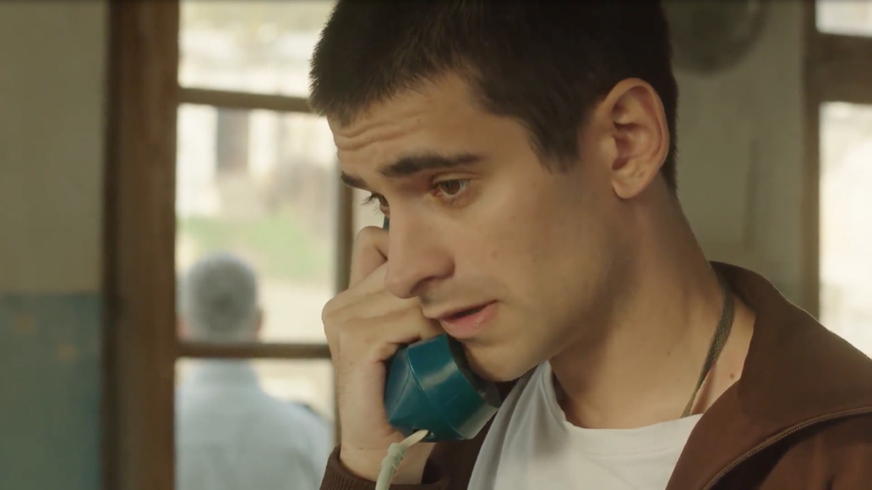
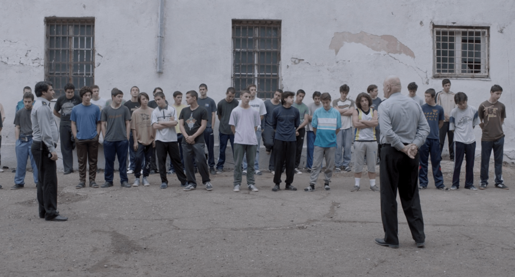

"უარყოფითი რიცხვები" - ინტერვიუ რეჟისორ უტა ბერიასთან
"უარყოფითი რიცხვები" - ასე ჰქვია უტა ბერიას პირველ სრულმეტრაჟიან
კინოსურათს, რომელსაც ქართველი მაყურებელი სულ მალე თბილისის საერთაშორისო
კინოფესტივალის ფარგლებში იხილავს. ფილმის სცენარი არასრულწლოვანთა
სასჯელაღსრულების დაწესებულებაში ვითარდება და იმ რეალური გმირების ისტორიებზეა
დაფუძნებული, რომლებიც რეჟისორმა რამდენიმე წლის წინ ავჭალის კოლონიაში გაიცნო.
"უარყოფითი რიცხვები" ყოფილ მეათე საპყრობილეშია გადაღებული, იმ რეალურ
გარემოში, რომელიც ძალიან ბევრი ბავშვის ტრაგიკულ ისტორიას და მთელი ჩვენი
საზოგადოების ერთ-ერთ ყველაზე დიდ პრობლემას - კრიმინალურ მენტალიტეტს
წლების განმავლობაში საკუთარ კედლებში ინახავს.

უტა, როდის გაგიჩნდა სურვილი, რომ რეჟისორი გამხდარიყავი?
ცამეტი წლიდან დავინტერესდი - ერთ დღეს ჩემი მეგობარი მოვიდა, მითხრა,
სცენარი დავწერე და მოდი გადავიღოთო, მას მალევე დაავიწყდა, მაგრამ მე არ
დამვიწყებია და სულ მქონდა სურვილი, რომ გადამეღო. მერე მოსამზადებელ კოლეჯში
ვსწავლობდი, რის შემდეგაც უნივერსიტეტში ბიზნესის ან სამართლის ფაკულტეტზე
უნდა ჩამებარებინა, მაგრამ მივხვდი, რომ ეს ყველაფერი არ მაინტერესებდა
და საბოლოოდ თეატრალურში სარეჟისოროზე ჩავაბარე.

"უარყოფითი რიცხვები" შენი პირველი სრულმეტრაჟიანი ნამუშევარია, რომლის
სცენარიც არასრულწლოვანთა სასჯელაღსრულების დაწესებულებაში ვითარდება. რა ისტორიაა
ამ იდეის უკან, რატომ გადაწყვიტე, რომ ამ სივრცეში შესულიყავი და პრობლემა
შიგნიდან დაგენახა?
2011-2012 წლებში მორაგბეები - ლექსო გუგავა და ნონო ანდღულაძე ავჭალის
კოლონიაში დადიოდნენ და ბიჭებს რაგბიში ავარჯიშებდნენ. მათ მეგობარს, გიორგი
დუჩიძეს გაუჩნდა იდეა, რომ იმ ისტორიებზე და შთაბეჭდილებებზე, რასაც ლექსო და ნონო
ჰყვებოდნენ, ფილმი გადაეღოთ, რომ სხვებსაც სცოდნოდათ, რა ხდება შიგნით, რომ
დამნაშავე მოზარდები ამავდროულად საზოგადოების გულგრილობის მსხვერპლნიც არიან.
თავიდან ამ პროექტში მე ისე ჩავერთე, როგორც სცენარისტი. ძალიან დიდხანს
ვმუშაობდი სცენარზე, დიდი მასალა იყო, მათ შორის ავჭალის კოლონიაში მომუშავე
ფსიქოლოგების კვლევები, ბავშვების საქმეები და ისტორიები. ერთ დღეს მოვახერხეთ და
ერთ-ერთ ვარჯიშზე მეც შემიყვანეს - ფილმი ვაჩვენეთ მსჯავრდებულებს. ძალიან
მნიშვნელოვანი დღე იყო ჩემთვის, რამდენიმე საათი მქონდა, რომ ყველაფერს შიგნიდან
დავკვირვებოდი, მერე იმდენი ხანი დავუთმე სცენარს და იმდენი ენერგია დავახარჯე,
რომ გადავწყვიტე, ფილმის რეჟისორი მე თვითონ ვყოფილიყავი.